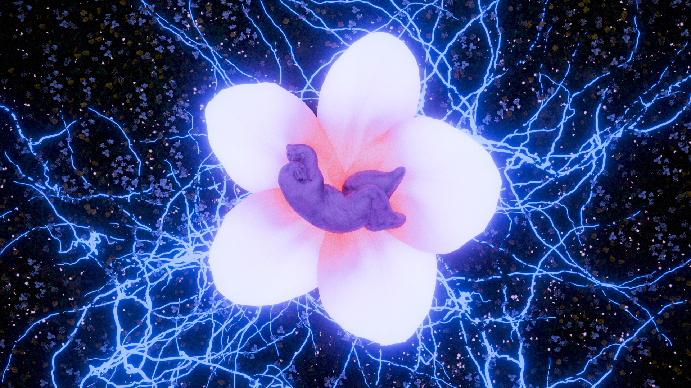
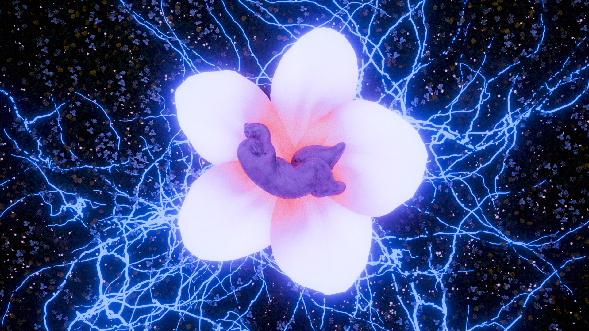
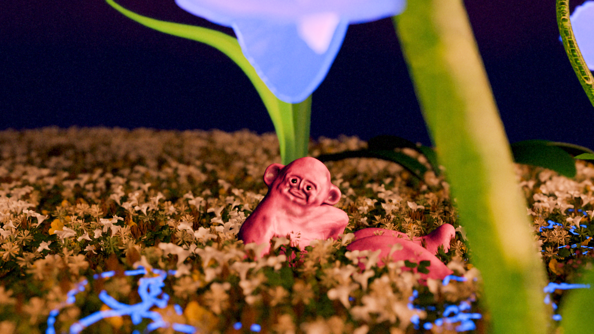
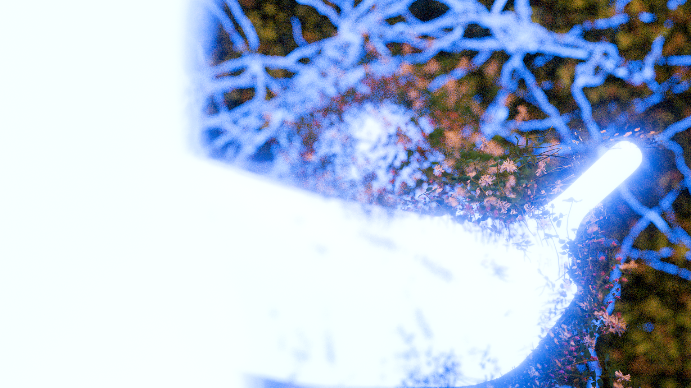
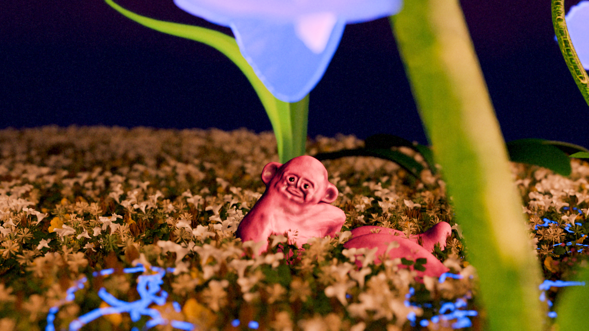
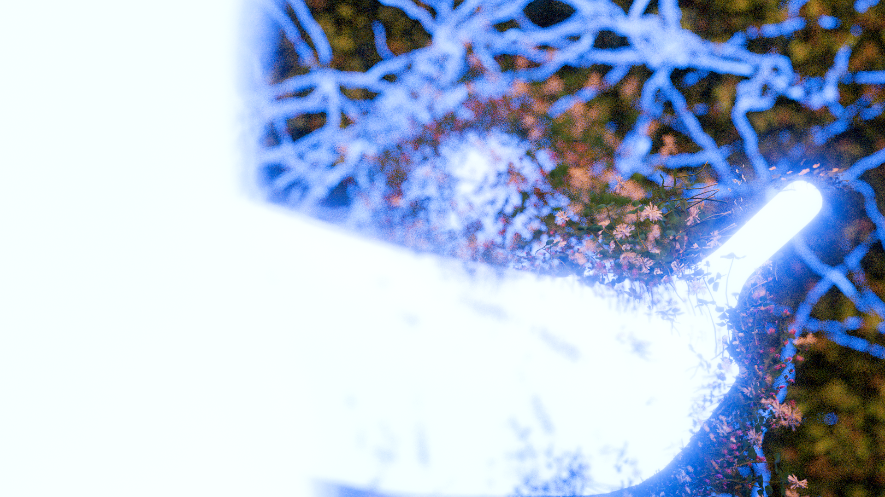

Experience
2025
Internship
@ Jonas Johansson & Smash, Stockholm
2023 - 2024
Editorial designer
@ Ordkonst, Malmö
2023
Internship
@ BEAST Studio, Malmö
2021 - ongoing
Freelance
@ Sole Proprietorship
Education
2024 - ongoing
Bachelor of Fine Arts,
Visual Communication
@ Beckmans College of Design,
Stockholm
2022 - 2024
Vocational preparatory,
Graphic Design & Visual Communication
@ Östra Grevie, Malmö
Exhibitions
2025
100 bilder
Participant in group show
@ Trapphuset
2024
Ritualen
Participant in group show &
editorial design
@ Redan Galleri, Malmö
Begynnelsen
Degree Exhibition
@ STPLN, Malmö
2023
Lekke Kollektiv
Participant in group show
@ Mitt i Möllan, Malmö
Lost & Found
Participant in group show & visual identity
@ Redan Galleri, Malmö
Southern Swedish Design Days
Participant in group show
@ Lokstallarna, Malmö
About
I’m a freelance graphic designer and a second year student at the BFA program in Visual Communication @ Beckmans College of Design, Stockholm.
Tools I use:
InDesign, Photoshop, Illustrator
After Effects, Premiere Pro
Blender, Substance 3D Sampler
HTML, CSS, JavaScript
Field Day
Short film, 2 min. 2025
In collaboration with students from the Royal College of Music (KMH) and Beckmans college of design, students where provided with music to freely interpret a music video. The result of a four week long motion design course at where I modeled and animated everything using Blender. The visual concept was inspired by themes of heartbreak, letting go, and letting new things grow. Music by Erasmus Talbot.
 


 



Ordkonst
Editorial design. 2023-2024
Layout and graphic design on behalf of Ordkonst. Responsible for all typesetting, layout and graphic material
provided for print and web. Ordkonst is Akademiska Föreningen committee of literature at Lund’s University.
Established in 1994, Ordkonst is published four times a year and each issue revolves around a theme
and contains contributions from
both established and non-established
writers and artists.
Ordkonst
gratefully accept contributions
of various kinds publishing all
kinds of fiction texts, essays,
reviews and images.
Available for purchase @ AF-bogren, Lund, Malmö konsthall, Malmö, Papercut, Stockholm, Rönnells antikvariat, Stockholm, Møllegadens boghandel, Köpenhamn.

Ateljén
2025
An experimental web tool that distorts hand-drawn sketches in real time using computer vision and creative coding. Built with p5.js and TensorFlow.js.
Forest Fighter
2023
A branding and identity project for a local startup. Developed logo, color palette, and brand guidelines, focusing on playful minimalism and accessibility.


WeType
2023
Designed a series of posters for a cultural festival, combining analog collage techniques with digital manipulation to create vibrant, layered visuals.


Knit
2024-2025
Created an interactive portfolio website for a photographer, featuring custom animations and a dynamic gallery powered by JavaScript and CSS Grid.


Field Day
Ordkonst
Ateljén

Forest Fighter

Trynir
Knit
Knit